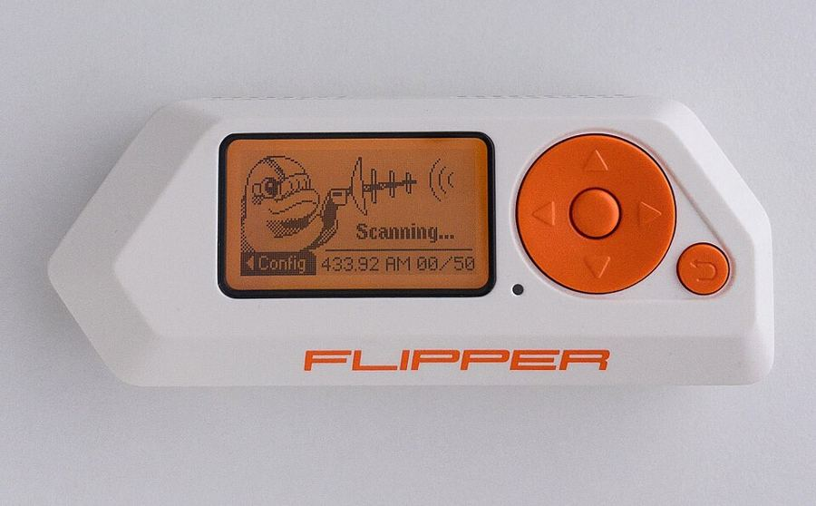
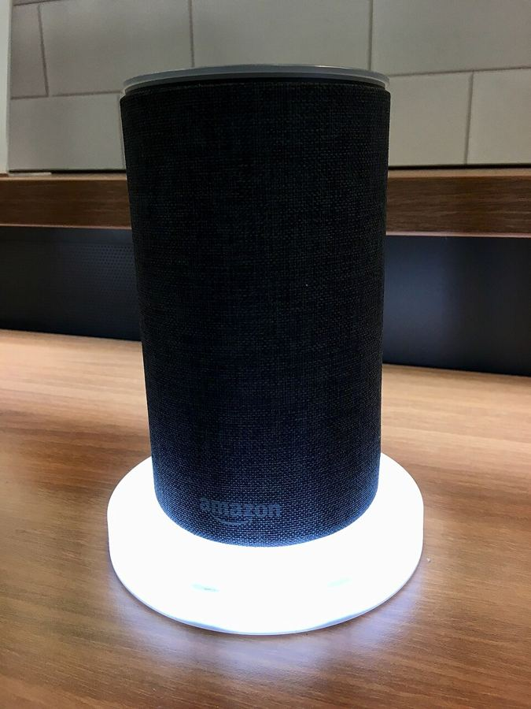

Phishing e smishing
Messaggi che imitano banca, corriere o ente pubblico per far cliccare un link o inserire credenziali in un sito clone.
- Segnale
- Urgenza, mittente appena diverso, link che non porta al dominio ufficiale.
Guida divulgativa · sicurezza e privacy
Dal phishing ai deepfake vocali, dai gadget da tasca come il Flipper Zero fino agli oggetti che portiamo in casa e sul viso: assistenti vocali e occhiali smart che inviano audio e immagini al cloud, dove a volte li guardano persone in carne e ossa.
Non sono «vecchi»: sono ancora la maggior parte di ciò che succede ogni giorno. Funzionano perché sfruttano abitudini, configurazioni trascurate e software non aggiornato.
Messaggi che imitano banca, corriere o ente pubblico per far cliccare un link o inserire credenziali in un sito clone.
Telefonate di finti tecnici o «operatori antifrode» che costruiscono un pretesto credibile per ottenere codici o bonifici.
Software che cifra file e backup e chiede un riscatto; spesso i dati vengono anche copiati per minacciarne la pubblicazione.
Si provano in massa password rubate da altri siti o combinazioni comuni. Chi riusa la stessa password ovunque è il bersaglio ideale.
Dati non validati che il sito interpreta come comandi (es. SQL injection, XSS). Colpisce chi sviluppa e gestisce siti, non chi li visita.
Una marea di richieste da migliaia di dispositivi compromessi satura un servizio fino a renderlo inutilizzabile.
Chi si interpone fra te e il servizio può leggere o alterare il traffico, tipicamente su reti pubbliche aperte o con nomi ingannevoli.
L’attacco entra tramite un aggiornamento, una libreria o un fornitore di fiducia, aggirando le difese del bersaglio finale.
L’IA non inventa nuove categorie di crimine: abbassa il costo di quelle esistenti, le rende più credibili e le moltiplica. E, allo stesso tempo, diventa essa stessa un bersaglio.
I modelli linguistici scrivono email impeccabili, in qualsiasi lingua e con il tono giusto. Sparisce il vecchio indizio degli strafalcioni.
Pochi secondi di audio pubblico bastano a imitare una voce: il «figlio in difficoltà» o il «capo che urge» al telefono.
Videochiamate o filmati manipolati. Sono già stati usati in frodi aziendali con falsi dirigenti in riunione.
L’IA incrocia profili social, siti e dati trapelati per costruire messaggi personalizzati per migliaia di persone insieme.
Gli assistenti di programmazione possono accelerare chi sa già scrivere codice ostile. I fornitori inseriscono filtri, ma non sono infallibili.
Testo nascosto in una pagina, un PDF o un’email convince un assistente IA a ignorare le istruzioni e a rivelare dati o agire al posto tuo.
Dati di addestramento manipolati, modelli che «ricordano» informazioni riservate, dipendenti che incollano segreti in chatbot non autorizzati.
Lato difesa conta altrettanto. L’IA aiuta a individuare anomalie, filtrare spam e smistare gli allarmi più in fretta. La corsa è simmetrica: vince chi ha le basi in ordine.
Dispositivi tascabili nati per studio e test autorizzati. Fanno parlare con oggetti di uso comune e mostrano quanto certi sistemi siano fragili per progetto, non per magia.

Grande come un telecomando da auto, il Flipper Zero riunisce in un solo oggetto radio sub-GHz, lettore RFID e NFC, trasmettitore a infrarossi, porta USB e pin di espansione. Costa poco più di un buon paio di cuffie ed è diventato il simbolo dell’«hacking da tasca», tanto che alcuni Paesi ne hanno discusso il divieto.
Il suo vero merito è didattico: rende visibile in pochi secondi quali oggetti intorno a noi non hanno alcuna protezione.
Il rischio riguarda i sistemi di accesso obsoleti. La soluzione è sostituire i lettori con tecnologie autenticate, non vietare i gadget.
Chiavette o cavi che si presentano come tastiera e digitano comandi in pochi secondi. Il computer si fida di tutto ciò che si dichiara «tastiera».
Dispositivi che imitano una rete nota per attirare i telefoni. Per questo i dispositivi che si riconnettono da soli sono un rischio.
Radio programmabili e ripetitori possono estendere il raggio di certe chiavi keyless. Riguarda soprattutto alcuni modelli di auto.
Legalità. Possedere un Flipper Zero è legale; usarlo su sistemi o cose altrui senza autorizzazione no, e in Italia può configurare reati come l’accesso abusivo a sistema informatico (art. 615-ter c.p.). Provalo solo sui tuoi dispositivi o in un ambiente di test autorizzato.
Non tutti i rischi arrivano da un criminale. A volte i dati escono con il nostro consenso, sepolto in una pagina di termini d’uso, e finiscono davanti a occhi che non immaginiamo: agenzie governative, dipendenti, subappaltatori dall’altra parte del mondo.
Caso 1 · Stati Uniti, 2013
Nel 2013 Edward Snowden, consulente informatico che lavorava per la NSA tramite la società Booz Allen Hamilton, consegna a un gruppo di giornalisti (Glenn Greenwald, Laura Poitras, Ewen MacAskill e poi Barton Gellman) migliaia di documenti riservati. Ne emerge un sistema di raccolta dati su scala globale, che coinvolge anche cittadini non sospettati di nulla.
Perché ci riguarda ancora. Dopo Snowden la cifratura end-to-end è diventata la norma in app come WhatsApp e Signal, e HTTPS è ovunque. La lezione resta: i metadati raccontano di te quasi quanto i contenuti.

Caso 2 · Assistenti vocali, dal 2019
Nell’aprile 2019 Bloomberg rivela che migliaia di dipendenti e collaboratori di Amazon, da Boston al Costa Rica, dall’India alla Romania, ascoltano e trascrivono spezzoni delle conversazioni con Alexa per migliorarne il riconoscimento vocale. Alcuni dichiarano di ascoltare fino a 1.000 clip per turno, comprese scene private o inquietanti.
Nel 2023 Amazon ha accettato di pagare 25 milioni di dollari alla FTC americana per aver conservato a lungo le registrazioni vocali dei bambini. Dal 28 marzo 2025, con l’arrivo di Alexa+, è sparita l’opzione che su alcuni Echo permetteva di elaborare la voce sul dispositivo senza inviarla al cloud.
Non è solo Amazon: nel 2019 sono emerse revisioni umane simili anche per Siri (Apple) e Google Assistant, poi sospese o rese facoltative.
Caso 3 · Occhiali smart, 2025–2026
Gli occhiali Ray-Ban Meta hanno fotocamera e microfoni nella montatura: oltre 7 milioni di paia venduti nel solo 2025. Da aprile 2025 Meta ha cambiato le regole: l’IA con fotocamera resta attiva finché è attivo il comando «Hey Meta», e le registrazioni vocali vengono conservate fino a un anno senza possibilità di disattivarlo, si possono solo cancellare a mano.
A febbraio 2026 un’inchiesta dei quotidiani svedesi Svenska Dagbladet e Göteborgs-Posten, basata su oltre trenta testimonianze, rivela che a Nairobi i dipendenti di Sama, società subappaltatrice di Meta, etichettano video e audio ripresi dagli occhiali per addestrare l’IA. Raccontano di aver visto persone in bagno, mentre si spogliano o hanno rapporti sessuali, e carte bancarie inquadrate per caso. Secondo gli annotatori, la sfocatura automatica dei volti a volte non funziona.
Meta sostiene che la revisione umana è prevista dalla sua informativa e che i dati vengono prima filtrati per tutelare la privacy. Ha poi dichiarato che Sama «non rispettava i suoi standard». Le accuse della class action non sono ancora state provate in tribunale.
Già nel 2024 due studenti di Harvard avevano mostrato che, collegando questi occhiali a un motore di riconoscimento facciale, si può risalire in pochi secondi a nome e indirizzo di sconosciuti incrociati per strada.
Il percorso tipico di un clip audio o video che un’azienda usa per addestrare l’IA. Il punto rosso è quello che quasi nessuno immagina.
Il lavoro invisibile dell’IA. Sama non è nuova a questi casi. Fra il 2019 e il 2023 ha moderato a Nairobi i contenuti di Facebook, e nel 2021–22 ha filtrato per OpenAI testi violenti destinati a ChatGPT, con paghe fra 1,32 e 2 dollari l’ora (TIME, 2023). Dietro l’«intelligenza artificiale» ci sono spesso persone sottopagate che guardano ciò che noi non vorremmo mai mostrare.
Gli articoli originali da cui partono i casi di questa pagina. Titoli in lingua originale, sintesi in italiano. Ogni ritaglio apre la fonte in una nuova scheda.
Il primo scoop dai documenti di Snowden: un ordine segreto obbliga Verizon a consegnare alla NSA i metadati di tutte le chiamate.
Leggi l’originale →Snowden esce allo scoperto e spiega perché ha deciso di rendere pubblici i documenti.
Leggi l’originale →Un team globale di dipendenti e collaboratori ascolta e annota le registrazioni degli Echo per addestrare l’assistente.
Leggi l’originale →Anche Siri: collaboratori esterni ascoltano spezzoni con dati medici, affari e momenti intimi registrati per errore.
Leggi l’originale →I dipendenti di Sama a Nairobi leggevano descrizioni di violenze per insegnare all’IA a riconoscerle.
Leggi l’originale →Meta cambia l’informativa: IA con fotocamera attiva di default, registrazioni vocali conservate senza possibilità di rinuncia.
Leggi l’originale →Riprende l’inchiesta di Svenska Dagbladet e Göteborgs-Posten sugli annotatori di Sama a Nairobi.
Leggi l’articolo →Dopo l’inchiesta Meta chiude il contratto: 1.108 lavoratori ricevono la lettera di licenziamento.
Leggi l’originale →Nessuna misura è perfetta, ma poche abitudini ben scelte fermano la grande maggioranza degli attacchi e riducono ciò che regaliamo a chi ascolta.
Le spunte restano salvate solo nel tuo browser.